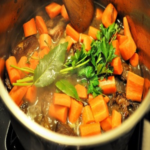
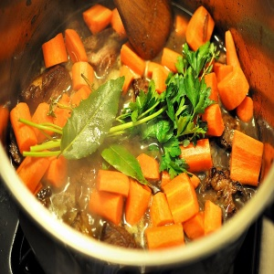

Categories
Asian DishesBeef
Breakfast
Burgers
Cakes
Chicken
Cookies
Cultural Foods
Dessert
Drinks
Fruits & Vegetables
Healthy Meals
Late Night
Mediterranean
Party Dishes
Pasta
Pizza
Relaxing Dishes
Salads
Sandwiches
Seafood
Soups
Sweets
Warm Beverages
Meals With Prep
The dish originates from the Burgundy region (in French, Bourgogne) which is in the east of present-day France, as do many other dishes such as coq au vin, escargot, persillé ham, œufs meurette, gougères, pain d'épices, etc.
It is a stew prepared with beef braised in red wine, traditionally red Burgundy, and beef broth, generally flavoured with garlic, onions and a bouquet garni, with pearl onions and mushrooms added towards the end of cooking.
Wikipedia
Estimated Calorie Count: ~5668 total / ~ 708 - 944 per serving
This recipe serves 6 - 8

We hope you enjoy this!
*Please note: Your meal may come out different than the photo shown.
You are always free to add or leave out any ingredients.
Back To Meals With Prep
Go back & select another category
Jump to a random meal
tweet share
Wikipedia
ingredients
1Blanched Lardons 2Julia Child's Herb Bouquet 3Brown-Braised Onions 4Sauteed Mushrooms |
instructions
The dish may be made ahead of time & refrigerated at this point. To serve, bring to a simmer over moderate heat |
This recipe serves 6 - 8

We hope you enjoy this!
*Please note: Your meal may come out different than the photo shown.
You are always free to add or leave out any ingredients.
Go back & select another category
Jump to a random meal
tweet share